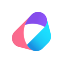
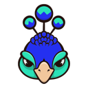

LiteLLM alternatives (2026)
LiteLLM is a agent infra tool: Open-source AI gateway and Python SDK that calls 100+ LLM providers in the OpenAI format, with cost tracking, guardrails, load balancing and logging. Pricing, as the maker states it: Open source + cloud. Its GitHub repo has 62,146 stars. We found 39 tools in the directory that do overlapping work (building AI agents, building voice agents, building MCP servers); 26 of them are open source and 5 list a free or freemium plan. Below are the 10 closest, ranked by how many tasks and sub-tasks they share with LiteLLM, then by GitHub stars.
Updated
Quick answer: the top picks on this list, ranked by GitHub stars and listing maturity, are Orkes, NVIDIA Open Agent Safety Platform and opencodex, out of 12 tools listed below. At a glance: 10 open-source, 12 free or freemium and 10 local or self-hosted across 12 link-checked tools (last verified ).
Verified on : every tool link on this page was checked by our daily link check. No paid placements.
Ranked comparison (top 10)
| # | Tool | Pricing | Best for | Open source | Runs locally | GitHub stars |
|---|---|---|---|---|---|---|
| 1 |  Orkes | Open source + cloud | build an agent, automate workflows | Yes | Self-hosted | 32,391 |
| 2 | NVIDIA Open Agent Safety Platform | Open source | monitor & evaluate agents | Yes | Self-hosted | |
| 3 | opencodex | Open source | write code, build an agent | Yes | Offline | 17,959 |
| 4 | Portkey AI Gateway | Freemium | agent infra | No | 13,280 | |
| 5 |  Manifest | Open source + cloud | automate workflows, monitor & evaluate agents | Yes | Self-hosted | 7,602 |
| 6 | Monid | Open source + cloud | voice & phone calls | Yes | Self-hosted | 6,732 |
| 7 | Open source | build an agent, automate workflows | Yes | Self-hosted | 6,103 | |
| 8 | Open source + cloud | connect tools via MCP | Yes | Self-hosted | 44,307 | |
| 9 | Inngest | Freemium | automate workflows, monitor & evaluate agents | No | 5,994 | |
| 10 | Arcade | Open source + cloud | build an agent, connect tools via MCP | Yes | Self-hosted | 1,060 |
Looking for the open-source microservice workflow engine? See Orkes Conductor →.
" if x["slug"]=="conductor" else "") + f"- NVIDIA Open Agent Safety Platform (Open source): Reference stack pairing OpenShell with NVIDIA Sentry on BlueField-4 DPUs for hardware-level agent monitoring. Consider it because it also covers terminal and CLI agents.
- opencodex (Open source): A local provider proxy that lets OpenAI Codex (CLI, app and SDK) and Claude Code run on other model providers such as Claude, Gemini, Grok, DeepSeek or local Ollama models. Consider it because it also covers local and self-hosted and terminal and CLI agents.
- Portkey AI Gateway (Freemium): Fast open-source AI gateway that routes requests to hundreds of LLMs through one API with fallbacks, load balancing and built-in guardrails. Consider it because it does the same job with a different approach (freemium).
- Manifest (Open source + cloud): Open-source LLM gateway that routes each request from agents and apps to the right model across API keys, subscriptions and local models, with spend tracking. Consider it because it also covers local and self-hosted.
- Monid (Open source + cloud): Gateway that gives an agent one base URL and one key to call thousands of paid tools, from web scraping and enrichment to image and voice generation, billed per call. Consider it because it also covers scraping and crawling and images and design.
 Open Connector (Open source): Open-source auth gateway connecting SaaS apps to AI agents via SDK, CLI and MCP. Consider it because it also covers identity, auth and secrets and terminal and CLI agents.
Open Connector (Open source): Open-source auth gateway connecting SaaS apps to AI agents via SDK, CLI and MCP. Consider it because it also covers identity, auth and secrets and terminal and CLI agents. Kong Gateway (Open source + cloud): Cloud-native API, LLM and MCP gateway that adds routing, auth, multi-LLM support, semantic security and MCP traffic analytics through plugins. Consider it because it also covers identity, auth and secrets.
Kong Gateway (Open source + cloud): Cloud-native API, LLM and MCP gateway that adds routing, auth, multi-LLM support, semantic security and MCP traffic analytics through plugins. Consider it because it also covers identity, auth and secrets.- Inngest (Freemium): Inngest is a durable workflow orchestration platform for running stateful step functions and AI workflows on serverless, servers or the edge. You write functions in TypeScript, Python or Go with automatic retries, queues, throttling and human-in-the-loop waits, and its AgentKit and AI inference steps let you build durable, long-running AI agents with tracing and evals. The server is source-available (SSPL, converting to Apache 2.0 later) and can be self-hosted, or you can use Inngest Cloud. Consider it because it also covers evals and benchmarks and workflow automation.
- Arcade (Open source + cloud): Actions runtime for enterprise agents with thousands of prebuilt authenticated tools, plus an open-source framework for building your own MCP servers. Consider it because it also covers identity, auth and secrets and MCP servers.
- Agent Barn (Open source + cloud): Agent Barn is an open-source (Apache-2.0) control plane for running a fleet of AI agents on your own Kubernetes: create, configure, run and monitor agents across Slack, Microsoft Teams and Telegram from one place. Consider it because it also covers running many agents in parallel and agents in chat apps.
LiteLLM vs alternatives at a glance
| Tool | Pricing | Open source / licence | GitHub stars | Good for |
|---|---|---|---|---|
| LiteLLM | Open source + cloud | MIT | 62,146 | building AI agents, building voice agents |
| NVIDIA Open Agent Safety Platform | Open source | Yes | — | coding in the terminal, evaluating agents |
| opencodex | Open source | Yes | 17,959 | writing code, coding in the terminal |
| Portkey AI Gateway | Freemium | MIT | 13,280 | agent security and safety |
| Manifest | Open source + cloud | MIT | 7,602 | automating workflows, evaluating agents |
| Monid | Open source + cloud | Yes | 6,732 | scraping websites, building voice agents |
| Open source | Apache License 2.0 | 6,103 | coding in the terminal, automating workflows | |
| Open source + cloud | Apache License 2.0 | 44,307 | connecting tools with MCP, building MCP servers | |
| Inngest | Freemium | No | 5,994 | automating workflows, building multi-agent systems |
| Arcade | Open source + cloud | Yes | 1,060 | building AI agents, running business operations |
| Agent Barn | Open source + cloud | Yes | 111 | evaluating agents, monitoring agents in production |
More: LiteLLM listing · All agent infra tools · All alternatives pages
Alternatives are picked from directory data only: same category plus shared tasks and sub-tasks. Pricing is as each maker states it; GitHub stars as recorded on each listing.